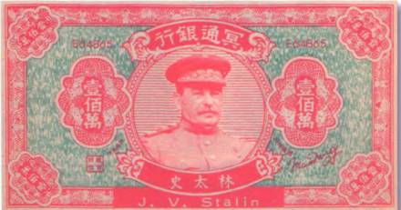
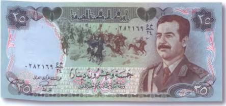
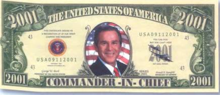

Тайны бумажных денег : Иосиф Сталин

И наконец, Иосиф Виссарионович Сталин (1879–1953). Настоящая фамилия этого советского партийного и государственного деятеля Джугашвилли (рис. 13). Но так уж вышло, что Сталин — одна из придуманных им же самим в 1912 г. подпольных партийных кличек — навсегда закрепилась за этим человеком.

Интересно, что именно Сталин звали и благородного героя романа А. Казбеги «Отцеубийца», которым увлекался в юности Сосо (так звали Сталина близкие люди). В 1894 г. Сталин поступил в Тифлисскую православную семинарию. Это немаловажный факт в его биографии, ибо много позже он сам утверждал, что стал революционером из протеста против издевательского режима и иезуитских методов, царивших в семинарии. Жизнь и деятельность Сталина оставила глубокий след не только в судьбе советского народа, но и всего человечества. Ведь превращение СССР в супердержаву и появление двухполярного мира напрямую связано с его деятельностью. Другое дело, что для многих миллионов советских людей образ этого человека был и навсегда останется образом тирана и массового убийцы.
В последние годы своего единовластного правления Сталин сильно опасался заговора против него. И не напрасно! За свою долгую (73 года) и богатую трагическими событиями жизнь он нажил немало смертельных врагов. В конце концов диктатор перестал доверять даже Лаврентию Берия — товарищу по партии и фактически второму человеку в руководстве госаппарата.
1 марта 1953 г. на Ближней даче в Кунцеве Сталина сразил инсульт. Вечером раньше (28 февраля) он хорошо выпивал в компании Берия, Маленкова, Хрущева и Булганина. Затянувшаяся вечеринка закончилась только в шестом часу утра.
По одной из версий обнаружил его охранник. Сталин неподвижно лежал на ковре и что-то невнятно бормотал. По другой версии, немощного и частично парализованного вождя народа нашла его домработница. А вот версию о насильственной смерти Сталина первым высказал его сын Василий, которого к отцу пустили только днем позже, когда тот уже не мог говорить. Впрочем, «высказал» — это неверно! Сын генералиссимуса был в этом совершенно уверен и, что отца отравили, утверждал на каждом шагу. За что и поплатился, оказавшись двумя месяцами позже в тюрьме, где и умер в 1962 г.
Сталин скончался от последствий кровоизлияния в мозг 5 марта 1953 г. в подмосковном Кунцеве. Из воспоминаний его дочери — Светланы Аллилуевой — видно, что умирал диктатор тяжко: «Агония была страшной. Она душила его у всех на глазах…» Так, если верить очевидцам, умирают ведьмы и колдуны, не оставившие учеников или не успевшие передать своих колдовских знаний по наследству. Но вероятнее всего, отходивший в иной мир деспот просто продолжал по привычке бороться со своими тайными врагами. Правда, нам теперь уже не узнать, с какими именно. С теми ли, что долго ждали этой смерти в надежде завладеть освободившимся «престолом», или же с теми, которые по его вине ушли из жизни прежде и с нетерпением поджидали его по ту сторону бытия. Вот как описывала последние минуты Сталина его дочь: «В какой-то момент… он открыл глаза и обвел ими всех, кто стоял вокруг. Это был ужасный взгляд, то ли безумный, то ли гневный… Вдруг он поднял кверху левую руку и не то указал ею куда-то вверх, не то погрозил всем нам».
Выходит, что появление этих исторических персонажей на китайских ритуальных деньгах — обстоятельство вполне закономерное и даже в какой-то степени ожидаемое. Создатели «денег мертвых» не могли обойти их вниманием. Слишком громкие имена! Слишком запутанные судьбы! Слишком много мистического в ауре каждого из них! А в случае со Сталиным даже демонического… А азиаты, как известно, очень чувствительны к подобным вещам.
Интересно, кто же из сильных и именитых мира сего будет запечатлен на ритуальных деньгах Китая следующим? Кого еще возьмутся пророчить в помощники адскому лорду (Lord of Hell) уверенные в его существовании китайцы?
Может быть, казненного по воле американской военщины иракского диктатора Саддама Хусейна, портрет которого украшает богатую по своему оформлению бону Ирака в 25 динаров 1986 г. (рис. 14)? Ведь его судьба не менее загадочна, а смерть не менее трагична… Кстати, повешение Хусейна свершилось накануне самого главного мусульманского праздника жертвоприношения — Ид аль-Адха — 30 декабря 2006 г. Простое совпадение?


А может быть, лик Саддама на «деньгах мертвых» уступит пальму первенства портрету его смертельного врага и теперь уже бывшего американского президента Джорджа Буша-младшего, на совести которого человеческих жертв ничуть не меньше? Как бы там ни было, но его улыбающуюся физиономию уже вовсю примеряют на сувенирные доллары (рис. 15).